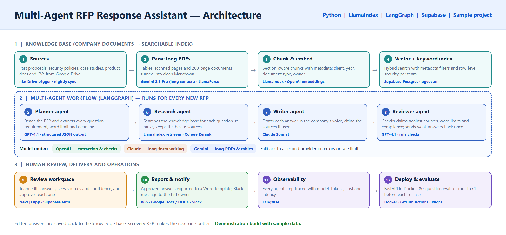
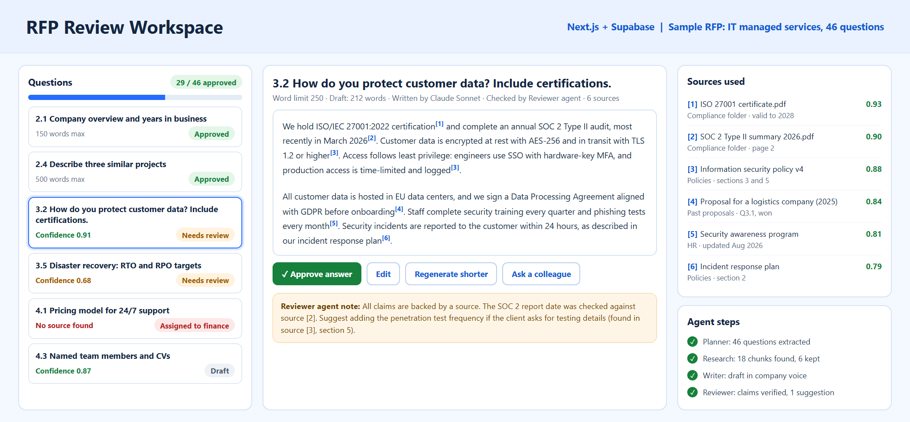
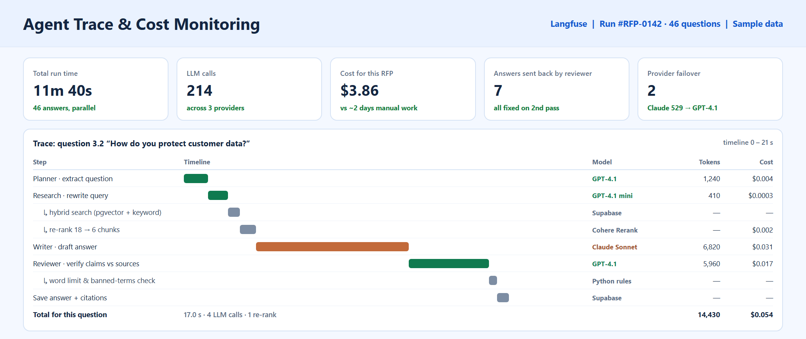
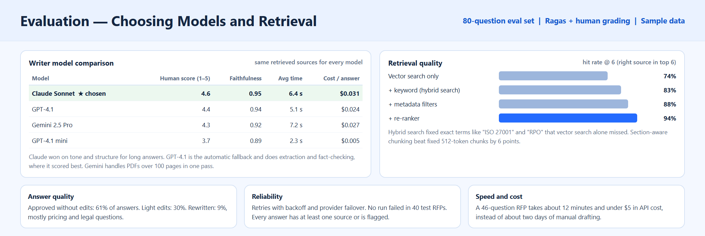
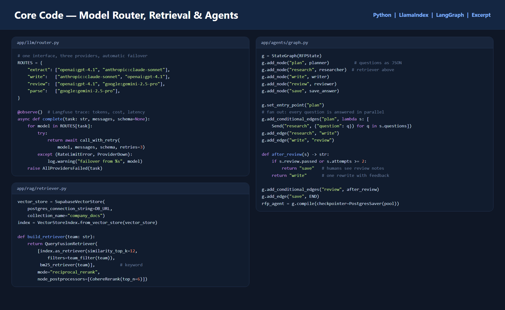

Architecture: knowledge base, the four-agent workflow with the model router, and human review and operations.
Review workspace: each answer with citations, sources, confidence and the reviewer agent note.
Langfuse trace of one question: which model did each step, how long it took and what it cost.
Evaluation: how the writer model was chosen and how retrieval quality was improved.
Code excerpt: model router, hybrid retriever and the LangGraph agent graph.The challenge
An IT services company answers several RFPs (requests for proposal) every month. Each one has 40 to 100 questions about security, experience, team, pricing and process. The answers already exist somewhere in old proposals, policies, certificates and CVs, but finding them, rewriting them for the new client and checking that every claim is still true took the bid team about two days per RFP. Copying from old proposals also caused mistakes, like outdated certificate dates.
The solution
I built a multi-agent RAG system that produces a complete, cited first draft in about 12 minutes. Four specialised agents work together in LangGraph, each question is answered in parallel, and every answer links to the exact documents it came from. A model router sends each task to the model that does it best: OpenAI for structured extraction and fact-checking, Claude for long-form writing, and Gemini for parsing very long PDFs. People stay in control: the team reviews, edits and approves every answer before anything is exported.
How it works
- Build the knowledge basen8n watches a Google Drive folder. New or changed documents are parsed (Gemini handles long PDFs, tables and scans), split into section-aware chunks with metadata like client, year and document type, embedded and stored in Supabase with pgvector.
- Planner agentReads the new RFP and returns every question, requirement, word limit and deadline as structured JSON.
- Research agentFor each question, rewrites the query, runs hybrid search (vector and keyword) with metadata filters, and re-ranks the results to keep the six best sources.
- Writer agentDrafts the answer in the company's voice, within the word limit, citing each source it uses.
- Reviewer agentChecks every claim against its sources, plus word limits and banned terms. Weak answers go back to the writer once with feedback; anything still uncertain is flagged for a person.
- Human reviewThe bid team works in a Next.js app with Supabase login: they see each answer, its sources and confidence, then approve, edit, regenerate or assign it to a colleague.
- Export and learnn8n exports approved answers into the company's Word template and notifies the bid owner in Slack. Approved answers are saved back to the knowledge base, so the next RFP starts from better material.
LLM integration
- One Python interface for OpenAI, Anthropic Claude and Google Gemini
- Task-based routing: each model does the job it scored best on in evaluation
- Automatic retries and failover to a second provider on errors or rate limits
- Structured JSON outputs with schema validation for extraction steps
- Every call traced in Langfuse with model, tokens, cost and latency
RAG pipeline
- LlamaIndex ingestion with section-aware chunking and rich metadata
- Supabase Postgres with pgvector, with row-level security so teams only search their own documents
- Hybrid retrieval (vector plus BM25 keyword) fused with reciprocal rank fusion
- Re-ranking to the six best sources per question
- Numbered citations in every answer, linked to the source document
Evaluation and production
- An 80-question evaluation set graded with Ragas and by people, run in GitHub Actions before each release
- Writer model chosen by testing: Claude Sonnet scored 4.6 out of 5, ahead of GPT-4.1 and Gemini 2.5 Pro
- Retrieval hit rate improved from 74% with vector search alone to 94% with hybrid search, filters and re-ranking
- FastAPI backend in Docker, Supabase for data and auth, n8n for integrations
- Cost and latency dashboards to keep each RFP under $5 in API cost
Results
- A 46-question RFP drafted in about 12 minutes instead of about two days
- 61% of answers approved without edits, 30% with light edits
- Every answer has a source, or is clearly flagged for a person
- No failed runs across 40 test RFPs, thanks to retries and provider failover
Demonstration build with sample data.
Other projects

A LangGraph chatbot that answers from the store's knowledge base and live Shopify data, with human handoff.

An LLM pipeline on vLLM that generated 1.5 million multiple-choice reading comprehension Q&A pairs, with validation, JSON repair and retries.

Supplier promotions turned into bilingual campaigns with branded visuals, human approval, Mailchimp and weekly reports.